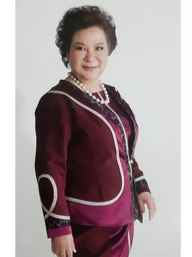
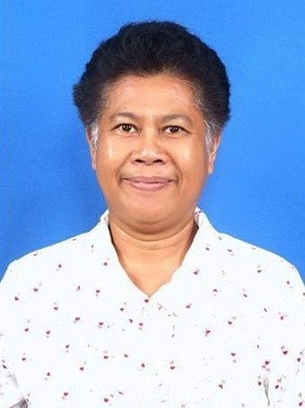

List of Alumni Association Advisors Phraharuthai Convent School Academic Year 2020
Asst. Prof. Chamnuy Wimalin -founder-
Asst. Prof. Chamnuy Wimalin -founder-
Asst. Prof. Chamnuy Wimalin -founder-
Asst. Prof. Chamnuy Wimalin -founder-
List of Executive Committees of the Sacred Heart Convent Alumni Association 2020-2022


Congratulations to Professor Emeritus Oranong Naivikul
Congratulations to Professor Emeritus Oranong Naivikul
" Kasetsart University Council Has a resolution to appoint " Emeritus Professor Oranong Naivikun " Department of Science
and food technology Faculty of Agro-Industry by receiving a certificate in the graduation ceremony
Annual Meeting of Kasetsart University on Wednesday, October 14, 2020 (3rd day) at 3:00 p.m. at Chakphan Pensiri Building.
Kasetsart University, Bang Khen, Bangkok. Thank you for the photo from: Kasetsart University.
Academic Year 2020 Activities
The ceremony of accepting the position of the Association President and Directors Sacred Heart Convent Alumni Association Agenda 2020 - 2022 and the association meeting
No. 5/2020, Professor Emeritus Oranong Naivikul handed over the position of President of the Heart Convent Alumni Association to
Khun Suntree Chanlongbut on Saturday, November 7, 2020 at the meeting room, One Century Building, Faculty of Sacred Hearts.
Sacred Heart Convent School Khun Suntree Chanlongbut was the sixth president of the association since receiving permission from the office.
National culture to be established on September 3, 1986 (currently established for 34 years)
Persons holding positions as presidents of the association in the following order
1. Asst. Prof. Chamnuay Wimalin, founded in 1986 -
2. Ajarn Suree Buranathanit, in office 1996 – 1998
3. Khun Nahathai Sorn Samutprakarn, held office from 1998 to 2002 (2 terms)
4. Ms. Kalaya Klomwit, held office from June 2002 – May 2006 (2 terms)
5. Emeritus Professor Oranong Naivikun, holding office – June 2006 – October 2020